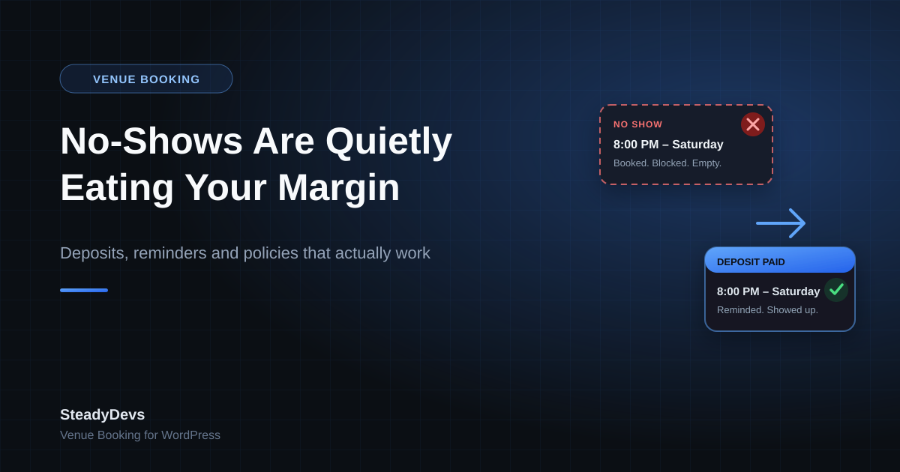

No-Shows Are Quietly Eating Your Venue's Margin: How to Cut Them Without Annoying Customers
Most venue owners can tell you their busiest hours. Far fewer can tell you how many of those booked hours actually got used. That gap is where no-shows live—and unlike a slow Tuesday afternoon, a no-show at peak time costs you twice: you lose the revenue, and you lost the chance to give that slot to someone who would have shown up.
A 10% no-show rate on peak slots doesn't feel dramatic day to day. Over a year, for a venue running eight peak hours a week at RM80 an hour, it's roughly RM3,300 of revenue that was booked, blocked and never collected—and that assumes you never turned anyone away for those slots, which at peak time you almost certainly did.
Why No-Shows Happen (It's Usually Not Bad Customers)
Booking is free and forgetting is easy
When a booking costs nothing to make and nothing to break, it isn't really a commitment—it's an intention. Customers who book a week ahead over WhatsApp and hear nothing until the day are relying entirely on their own memory.
Cancelling feels awkward, so people just don't
This one surprises owners. Plenty of no-shows are customers who knew they couldn't make it but had no easy way to cancel. Messaging a business owner to say "sorry, can't come" feels confrontational; silently not turning up doesn't. If cancelling is a conversation, some people will avoid it.
Speculative and duplicate bookings
Groups often book two slots while they sort out who's free, intending to release one. If releasing it takes effort, it stays on your calendar as a booked-but-dead slot.
The one to watch: no-shows cluster at peak times, because that's when people book early "just in case." Your most valuable hours carry your highest no-show risk.
What Actually Reduces No-Shows
There are only a handful of levers that reliably work, and they work in combination rather than alone.
- A deposit or prepayment. The single biggest lever. Even a small deposit converts an intention into a commitment—customers who have paid something turn up, or they cancel early enough for you to resell the slot.
- Automatic reminders. A confirmation at booking and a reminder the day before removes the "I completely forgot" category, which is a large share of no-shows for bookings made more than three days out.
- Easy self-service cancellation. Give customers a one-click way to cancel and you convert silent no-shows into early cancellations you can resell. A cancellation 24 hours out is worth far more to you than an empty court.
- A stated, visible policy. Not to punish people, but to set expectations. A policy customers saw at booking time does most of its work before anyone breaks it.
- Knowing your repeat offenders. A booking history that shows a customer has three no-shows lets you decide whether to require prepayment from them specifically, rather than tightening rules for everyone.
Introducing Deposits Without Losing Regulars
The fear that stops most owners is real: charge for something that used to be free and some customers will grumble. In practice, the grumbling is much smaller than expected when the change is introduced properly.
- Start with peak slots only. Leave off-peak bookings free to make. You get most of the protection where it matters and your quiet hours stay frictionless.
- Keep the deposit small and creditable. A deposit that comes off the final price isn't a charge—it's just paying earlier. Customers accept this far more readily than a fee.
- Make the policy generous at the edges. Full refund if cancelled 24 or 48 hours ahead. Most people never test it, but knowing it exists removes the objection.
- Tell regulars personally, once, before it starts. A short message explaining that it's to stop slots being blocked by people who don't turn up lands very differently from a policy discovered at checkout.
- Give it a month, then look at the numbers. Compare no-show rate and total booked hours before and after. Owners are usually surprised that total bookings barely move while completed bookings rise.
If you're not ready for deposits at all, start with reminders and one-click cancellation. They cost customers nothing, generate no pushback, and typically remove a meaningful share of no-shows on their own.
Measure It Before You Fix It
Most venues don't actually know their no-show rate—they know it "happens a lot." Before changing anything, spend four weeks recording, for every booking, whether it completed, was cancelled in advance, or was a no-show. Then split those numbers by peak versus off-peak, and by booking lead time.
You'll usually find the problem is narrower than it feels: a specific set of slots, or bookings made more than a week ahead. That tells you exactly where to apply deposits and where not to bother.
How a Booking System Does This For You
Every lever above is manual work if your bookings live in a spreadsheet or a WhatsApp thread. Reminders need someone to send them. Deposits need someone to chase them. No-show rates need someone to tally them.
This is the part a proper booking layer handles quietly: confirmations and reminders sent automatically, availability that reflects cancellations the moment they happen, and a record of every booking—completed, cancelled or missed—attached to the customer who made it, so the numbers are there when you want to look.
Turn Bookings Into Kept Appointments
SteadyDevs Venue Booking adds live availability, automatic confirmations and an admin approval queue to your existing WordPress site—so fewer slots go empty. Try it free for 14 days, no credit card required.
Start Your Free TrialThe Bottom Line
No-shows aren't a customer-behaviour problem you have to accept—they're a design problem in how bookings are made. When booking costs nothing, cancelling is awkward, and nobody gets reminded, a steady percentage of slots will go empty no matter how good your service is.
Fix those three things and the rate drops, usually without losing the customers you were worried about losing.
Frequently Asked Questions
It varies by type, but 5–15% of bookings is common for venues that take free bookings with no reminders. If you've never measured yours, assume it's higher than you think—and measure for a month before deciding how hard to push on deposits.
Some will say so; far fewer actually leave. Starting with peak slots only, keeping the deposit creditable against the final price, and offering a clear refund window removes most of the objection. Watch total completed bookings, not just complaints.
For bookings made more than a few days in advance, yes—forgetting is one of the largest single causes of no-shows. A confirmation at booking plus a reminder the day before addresses it at close to zero cost.
Handle them individually rather than changing policy for everyone. A booking history tied to each customer lets you require prepayment from the handful of people causing the problem while leaving your regulars untouched.
Yes. A booking layer added to your existing WordPress site handles availability, confirmations and booking records without touching the rest of your site or changing how customers find you.